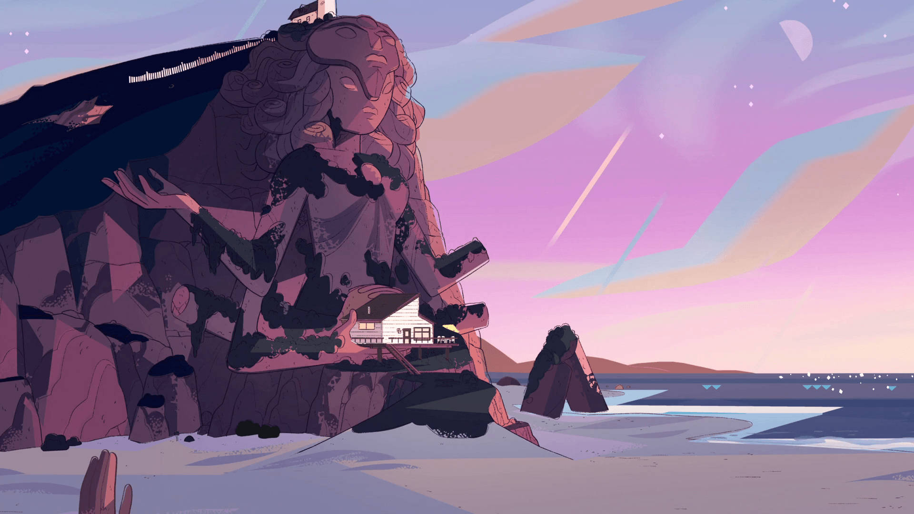

Steven Universe: Setting
Beach City
The setting of Steven Universe is primarily centered around Beach City, a small, coastal town located along the Eastern seaboard of the United States. This quaint, peaceful town features a variety of colorful, unique characters and places that contribute to the series' charm. The coastal environment and the natural beauty surrounding Beach City play an important role in the series, providing a serene and sometimes mysterious atmosphere. There are forests, caverns, and hidden gems scattered throughout the landscape, offering both a sense of adventure and a place for quiet reflection.
Gem Homeworld
The Gem Homeworld in Steven Universe is a mysterious, technologically advanced planet that serves as the central hub for the Gem race. It is characterized by its cold, industrial landscape, and rigid, hierarchical society. The Homeworld is depicted as a highly organized, sterile environment where Gems are created and assigned specific roles based on their type, each with distinct abilities and functions. It’s a place where emotion and individuality are suppressed in favor of conformity and order.
Other Places in the Universe
- Kindergardens
- Big Donut
- Crystal Temple
- Pink Dimension
- Moon Base
- The Lighthouse